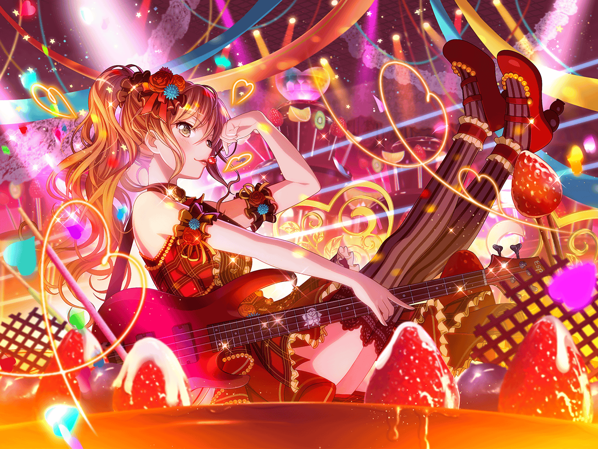

CiRCLE カフェテリア
リサ
でね、聞いてよ、まりなさん！
その時の、有咲の顔がすっごいかわいくて！
まりな
へぇ～、あの有咲ちゃんがねー。
なんか意外。
私も見てみたかったな
リサ
あっ、{{userName}}さん。
こんにちは
リサ
……え？ 今？
今はまりなさんと、バレンタインの話を、
ちょっとね～
リサ
有咲と一緒に、チョコを作った時のこと
まりな
けど、確かにバレンタインの翌日、
香澄ちゃんが駆け込んできて、有咲ちゃんに
チョコをもらった～って喜んでたよね？
リサ
あはは♪
それじゃあ、ポピパのみんな喜んでくれたんだ。
よかった～
リサ
それを聞いて、アタシまで嬉しくなるっていうか、さ！
リサ
口では『バレンタインなんて興味ない』みたいなことを
言ってたけど、チョコを作ってる時の有咲、
すっごい真剣な顔だったんだ
リサ
それに完成した時も、本当に嬉しそうだったし
リサ
何ていうか、あの素直じゃないところが
かわいいんだよねー、有咲って。
なーんか、応援したくなっちゃうっていうか☆
リサ
……え？ アタシが面倒見がいい？
ちょっとやめてよ{{userName}}さん
まりな
いやいや、私も同意見だな。
リサちゃんって、有咲ちゃんだけでなく、
みんなの面倒見が本当にいいよね？
リサ
まりなさんまで、やめてってー
まりな
だってほら、前にあこちゃんが自分の服に
ジュースをこぼしちゃった時とかも、
ずっと拭いてあげたりしてたし……
まりな
練習でうまくいかなかった時は、
付き合ってあげたりしてるでしょ？
リサ
そ、それは、何ていうか……
困ってる人がいると、気になっちゃうからさー
まりな
ホント、Roseliaのお母さんって感じ
リサ
わわっ！
女子校生にお母さんはやめてー。
そんな貫禄ないし〜
まりな
ふふふ。
そっか、お母さんは言い過ぎちゃったかな？
リサ
けど、もしもアタシが誰かの力になれてるなら、
それはすっごい嬉しいことだって思うよ
まりな
うん、リサちゃんのそういうところ、
本当にいいと思う
まりな
キミもそう思うよね？
リサ
……なんか、そんなに褒められると、
ちょっとヘンな感じ。
２人とも、ありがとう……
リサ
それじゃあ、嬉しい事を言ってくれた２人に……
はい、これっ！
まりな
これは……チョコ？
……え？
私達にも……いいの？
リサ
もっちろん！
いつもお世話になってるから、そのお礼！
リサ
これからもよろしくね！